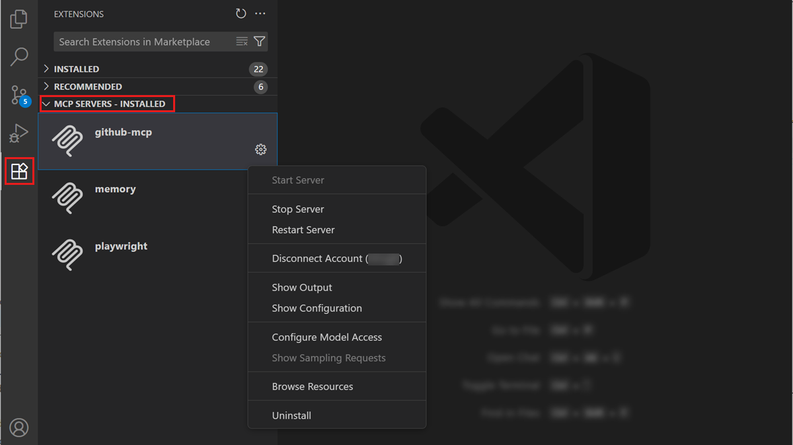
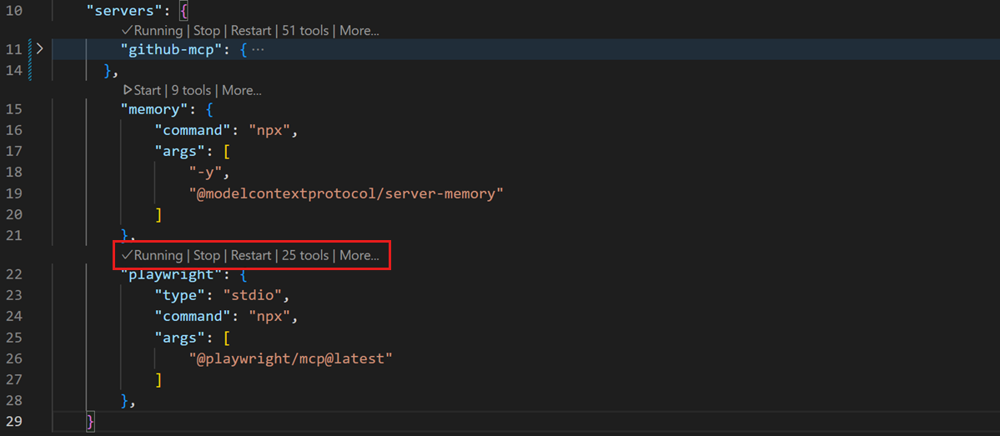
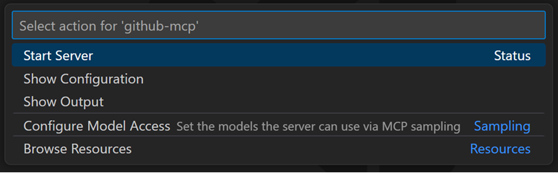
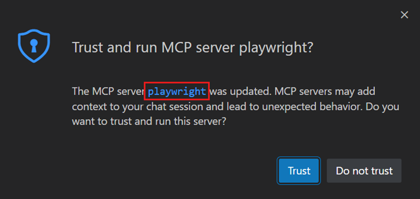
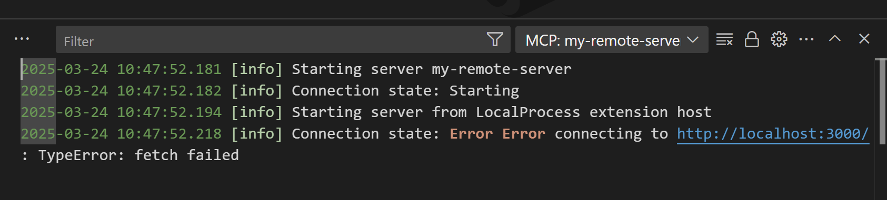

在 VS Code 中添加和管理 MCP 服务器
模型上下文协议 (MCP) 是一个开放标准，用于将 AI 模型连接到外部工具和服务。在 Visual Studio Code 中，MCP 服务器为文件操作、数据库或外部 API 等任务提供工具。MCP 服务器还可以提供资源、提示和交互式应用。
有关 MCP 如何融入 AI 自定义框架的背景信息，请参阅自定义概念和工具概念。
本文介绍如何添加、配置和管理 MCP 服务器。要了解如何在聊天中使用工具，请参阅在聊天中使用工具。
[!TIP]
使用代理自定义编辑器（预览版）在一个地方发现、创建和管理所有代理自定义。从命令面板中运行聊天：打开自定义。
快速入门：在聊天中使用 MCP 服务器
按照以下步骤安装 MCP 服务器并在聊天中使用其工具。本示例使用 Playwright MCP 服务器通过浏览器与网页进行交互。
- 打开扩展视图（
kb(workbench.view.extensions)）并在搜索字段中输入@mcp playwright。 - 选择安装以在你的用户配置文件中安装 Playwright MCP 服务器。
- 出现提示时，确认你信任该服务器以启动它。VS Code 会发现该服务器的工具并在聊天中使其可用。
- 打开聊天视图（
kb(workbench.action.chat.open)）并输入使用 Playwright 工具的提示。例如：Go to code.visualstudio.com, decline the cookie banner, and give me a screenshot of the homepage.
VS Code 将调用 Playwright 工具在浏览器中打开页面并截取屏幕截图。你可能会被要求确认每个工具的调用。
[!TIP]
选择聊天输入中的配置工具按钮，查看 Playwright MCP 服务器的所有可用工具，并切换特定工具的开启或关闭。
添加 MCP 服务器
要从 MCP 服务器库安装 MCP 服务器：
- 打开扩展视图（
kb(workbench.view.extensions)）并在搜索字段中输入@mcp。这将显示库中可用的 MCP 服务器列表。 - 你可以在用户配置文件或工作区中安装 MCP 服务器：
- 要在用户配置文件中安装，请选择安装。
- 要在工作区中安装，请右键单击 MCP 服务器并选择在工作区中安装。这将更新工作区中的
.vscode/mcp.json文件。
- 要在工作区中安装，请右键单击 MCP 服务器并选择在工作区中安装。这将更新工作区中的
- 要在用户配置文件中安装，请选择安装。
[!CAUTION]
本地 MCP 服务器可以在你的计算机上运行任意代码。只添加来自可信来源的服务器，并在启动之前检查发布者和服务器配置。阅读在 VS Code 中使用 AI 的安全文档，了解其影响。
配置 mcp.json 文件
你可以通过编辑 mcp.json 文件来手动配置 MCP 服务器。该文件有两个存放位置：
- 工作区：在项目中创建或打开
.vscode/mcp.json。将此文件包含在源代码管理中，以便与团队共享 MCP 服务器配置。 - 用户配置文件：运行 MCP：打开用户配置命令，打开用户配置文件文件夹中的
mcp.json文件。在此配置的服务器适用于所有工作区。当你使用多个配置文件时，每个配置文件可以有自己的 MCP 服务器配置。
你也可以在命令面板（kb(workbench.action.showCommands)）中运行 MCP：添加服务器，通过引导流程添加服务器，并选择工作区或全局作为目标。
[!IMPORTANT]
避免硬编码 API 密钥等敏感信息。请改用输入变量或环境文件。
以下示例展示了一个配置远程 MCP 服务器和本地 MCP 服务器的 mcp.json 文件：
{
"servers": {
"github": {
"type": "http",
"url": "https://api.githubcopilot.com/mcp"
},
"playwright": {
"command": "npx",
"args": ["-y", "@microsoft/mcp-server-playwright"]
}
}
}VS Code 为该配置文件提供 IntelliSense 支持。有关完整的配置架构和字段参考，请参阅 MCP 配置参考。
[!NOTE]
MCP 服务器在其配置的位置运行。用户配置文件中的服务器在本地运行。如果你连接到远程目标，并希望服务器在远程计算机上运行，请在在工作区设置或远程用户设置中定义它（MCP：打开远程用户配置）。
添加 MCP 服务器的其他选项
MCP 服务器可以通过 devcontainer.json 文件在开发容器中进行配置。这允许你将 MCP 服务器配置作为容器化开发环境的一部分包含在内。
要在开发容器中配置 MCP 服务器，请将服务器配置添加到 customizations.vscode.mcp 部分：
{
"image": "mcr.microsoft.com/devcontainers/typescript-node:latest",
"customizations": {
"vscode": {
"mcp": {
"servers": {
"playwright": {
"command": "npx",
"args": ["-y", "@microsoft/mcp-server-playwright"]
}
}
}
}
}
}创建开发容器时，VS Code 会自动将 MCP 服务器配置写入远程 mcp.json 文件，使其在容器化开发环境中可用。
VS Code 可以自动检测并重用来自其他应用程序（如 Claude Desktop）的 MCP 服务器配置。
使用 setting(chat.mcp.discovery.enabled) 设置，你可以选择一个或多个工具来从中发现其 MCP 服务器配置。
你也可以使用 VS Code 命令行界面将 MCP 服务器添加到用户配置文件或工作区。
要将 MCP 服务器添加到用户配置文件，请使用 --add-mcp VS Code 命令行选项，并以 {\"name\":\"server-name\",\"command\":...} 的形式提供 JSON 服务器配置。
code --add-mcp "{\"name\":\"my-server\",\"command\": \"uvx\",\"args\": [\"mcp-server-fetch\"]}"其他 MCP 功能
除了工具之外，MCP 服务器还可以提供其他功能：
| 功能 | 描述 | 如何使用 | ||
|---|---|---|---|---|
| ------------ | ------------- | ------------ | ||
| 资源 | 将来自 MCP 服务器的数据作为提示中的上下文进行访问，例如文件、数据库表或 API 响应。资源提供只读上下文，你可以将其附加到聊天请求中。 | 在聊天视图中，选择添加上下文 > MCP 资源。你也可以使用 MCP：浏览资源命令。 | ||
| 提示 | 使用 MCP 服务器中预配置的提示模板来标准化常见任务。每个 MCP 服务器都可以公开一组针对其功能定制的提示。 | 在聊天输入中键入 /。 | ||
| MCP 应用 | 获取直接呈现在聊天中的交互式 UI 组件，例如表单、可视化和拖放列表。MCP 应用支持比文本响应更丰富的交互。在 MCP 应用博客文章中了解更多信息。 | 当 MCP 服务器支持时，MCP 应用会以内联方式出现。 |
沙盒 MCP 服务器
在 macOS 和 Linux 上，你可以为本地运行的 stdio MCP 服务器启用沙盒，以限制其对文件系统和网络的访问。沙盒服务器在隔离环境中运行，只能访问你明确允许的文件路径和网络域。
要为服务器启用沙盒，请在 mcp.json 文件的服务器配置中将 "sandboxEnabled" 设置为 true。你可以通过添加带有特定文件系统和网络规则的顶级 sandbox 对象来进一步自定义沙盒限制。
以下示例展示了如何为本地 MCP 服务器启用沙盒，并限制其只能写入工作区中的文件并访问特定的 API 域：
{
"servers": {
"myServer": {
"type": "stdio",
"command": "npx",
"args": ["-y", "@example/mcp-server"],
"sandboxEnabled": true
}
},
"sandbox": {
"filesystem": {
"allowWrite": ["${workspaceFolder}"]
},
"network": {
"allowedDomains": ["api.example.com"]
}
}
}启用沙盒后，来自服务器的工具调用会自动批准，因为它们在受控环境中运行。
有关完整的沙盒配置架构，请参阅沙盒配置参考。
[!NOTE]
沙盒目前在 Windows 上不可用。
管理 MCP 服务器
VS Code 提供了多种选项来管理你的 MCP 服务器，例如启动或停止服务器、查看日志、卸载或清除缓存的工具。
| 方法 | 描述 | |||
|---|---|---|---|---|
| -------- | ------------- | --- | ||
| 扩展视图 | 在 MCP 服务器 - 已安装部分右键单击服务器，或选择齿轮图标。 |  | ||
mcp.json 编辑器 | 打开配置文件并使用内联操作（代码镜头）。使用 MCP：打开用户配置或 MCP：打开工作区文件夹配置打开文件。 |  | ||
| 命令面板 | 运行 MCP：列出服务器，选择一个服务器，然后选择一个操作。 |  |
启用或禁用 MCP 服务器
你可以全局或为特定工作区启用或禁用 MCP 服务器。当 MCP 服务器被禁用后，它将不会启动，其工具、提示、资源和 MCP 应用将从聊天中排除。
要启用或禁用 MCP 服务器：
- 在扩展视图的 MCP 服务器 - 已安装部分右键单击服务器，然后选择启用或禁用。
- 从命令面板运行 MCP：列出服务器，选择一个服务器，然后选择启用或禁用。
- 使用代理自定义编辑器切换服务器的启用状态。
启用/禁用状态与 mcp.json 中的服务器配置分开存储，因此不会影响共享的配置文件。
集中管理对 VS Code 中 MCP 服务器的访问
组织可以通过 GitHub 策略集中管理对 MCP 服务器的访问。了解有关 MCP 服务器的企业管理的更多信息。
自动启动 MCP 服务器
当你添加 MCP 服务器或更改其配置时，VS Code 需要（重新）启动服务器以发现它提供的工具。
你可以使用 setting(chat.mcp.autoStart) 设置（实验性）将 VS Code 配置为在检测到配置更改时自动重启 MCP 服务器。
MCP 服务器信任
当你将 MCP 服务器添加到工作区或更改其配置时，需要在启动之前确认你信任该服务器及其功能。首次启动服务器时，VS Code 会显示一个对话框以确认你信任该服务器。在对话框中，选择指向 MCP 服务器的链接以查看其配置。

如果你不信任该 MCP 服务器，它将不会启动，聊天请求将在不使用该服务器提供的工具的情况下继续。
你可以通过从命令面板运行 MCP：重置信任命令来重置你的 MCP 服务器的信任状态。
[!WARNING]
如果你直接从 mcp.json 文件启动 MCP 服务器，则不会提示你信任服务器配置。
跨设备同步 MCP 配置
启用设置同步后，你可以跨设备同步设置和配置，包括 MCP 服务器配置。这使你能够维护一致的开发环境并在所有设备上访问相同的 MCP 服务器。
要使用设置同步同步 MCP 服务器配置：
- 从命令面板运行设置同步：配置命令
- 在同步配置列表中启用 MCP 服务器选项
MCP 服务器故障排查与调试
MCP 输出日志
当 VS Code 遇到 MCP 服务器的问题时，它会在聊天视图中显示错误指示器。

选择聊天视图中的错误通知，然后选择显示输出选项以查看服务器日志。或者，从命令面板运行 MCP：列出服务器，选择服务器，然后选择显示输出。

常见问题解答
验证命令参数是否正确，以及容器是否未以后台分离模式（-d 选项）运行。你还可以检查 MCP 服务器输出以查找任何错误消息（请参阅故障排查）。